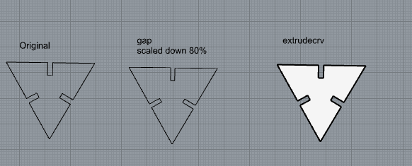
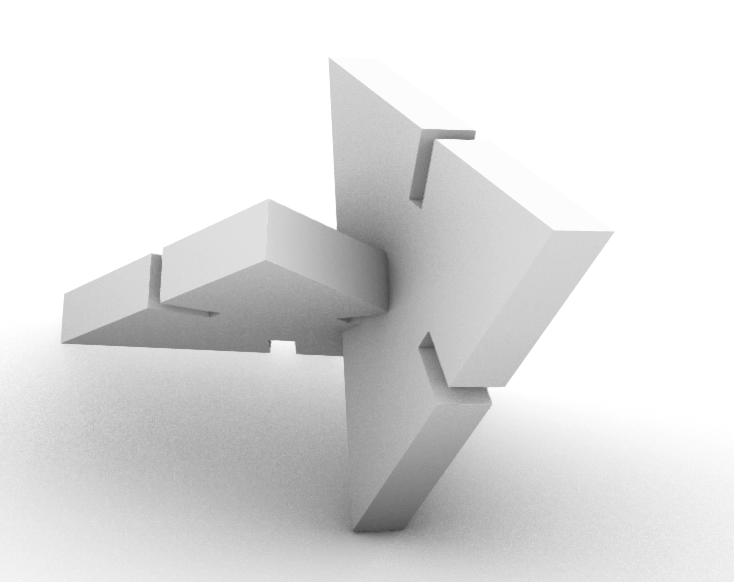
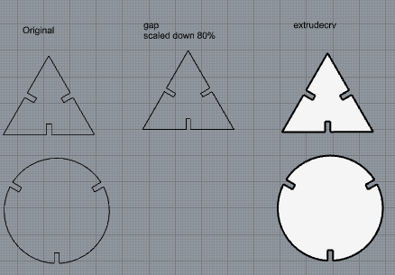

Assignment 1: Modelling and Laser Cutting
Here's where my assembled kit picture will go. For now, please enjoy the picture of the cute animal.

For this assignment, I decided to keep it simple in creating shapes and slots as easy as possible. I followed our TA's tutorial on Rhino to create the triangular shape as my first attempt.
I was also following his tutorial on how to render and see if the pieces fit together...I'll need practice on this, but here's my attempt.
After I have followed the steps on scaling down on the gaps and extruding, I started creating an oval shape as my unique/second shape for the assignment with the same size as my triangular shape, only to realize the size between the gaps are not matching up. So I reamde the triangle to better match the circle.
I'll document my process for lasercutting once it's ready.